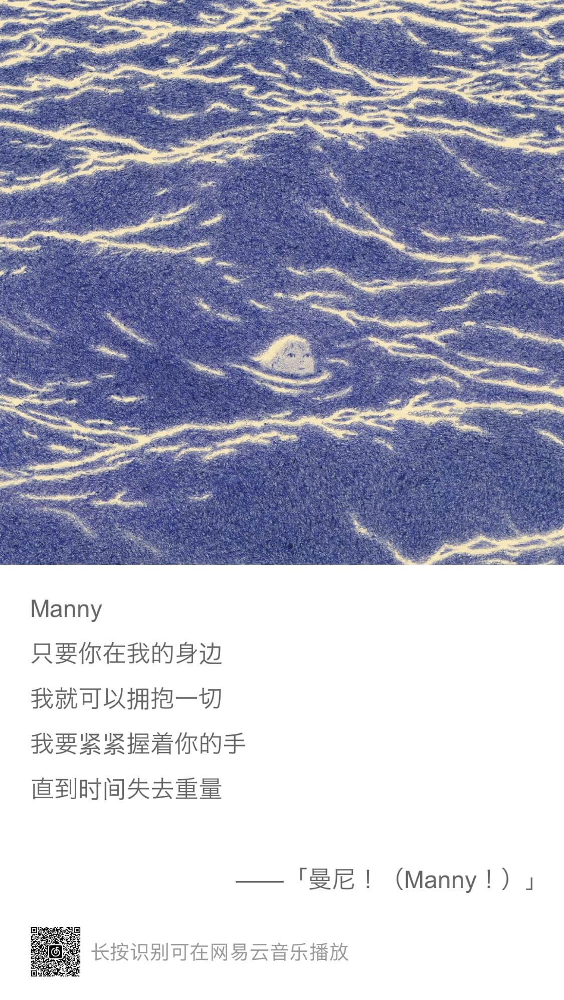

Weekly#3
Table of Contents
News | Article
How I Use "AI"
文章中有很多作者使用 AI 提高效率的例子。
我使用 AI 主要是通过网页和 ChatGPT 对话，例如给他一个大的对象，让他帮忙定义 TypeScript 类型；
让他帮我将一个 Vue3 写法的组件转换成 Vue2 的写法；
或者帮我生成一些特定结构的 mock 数据；
排查错误和给出一些思路等。
有了 AI 确实在某些方面提效不少。
Setting expectations for open source participation
一篇关于调整开源预期的文章，作者认为开源需要平衡协作维护，乐趣，生活这三者关系。
调整参与开源的心态，把开源当作是一种善意，友好地参与在其中。
不管是使用者，还是维护者，这篇文章都值得一读。
For me, the overall goal of open source is to attract and retain people to help maintain an open source project while enjoying the experience.
- 开源的一切都是有成本的。
- 开源的一切应该都是一系列善意。
The thing is that if you're involved with open source long enough you end up noticing that people are quite happy to help because they want to help. Remember, open source is done by people giving something away for free because they choose to; you could say you're dealing with a bunch of digital hippies. 😄
e18e
e18e(Ecosystem Performance) 是一个将 JS 依赖包清理，升级，加速的倡议。
Tutorial
《语法俱乐部》- 旋元佑
英语语法学习。
设计 Pathway
苹果的一些设计原则，在设计时可以参考。
how to get to know someone
对于一个刚认识的人，通过问一些什么问题，可以增进对他的理解。
WebGPU Unleashed: A Practical Tutorial
WebGPU 教程。
TypeScript Book
还不错的 TypeScript 教程。
Cool Bit
CSS Spring Easing Generator
直观的看 Spring Easing 的效果（类似弹簧的缓动效果）。
WhenFS
作者将图片拆分成小片然后存储在了 Google calendar 上，把日历变成了一种存储介质。
The best way to learn something new is to try it out for yourself—and creating a mess is a vital part of that process.

Primitive Pictures
将图片转换成许多色块组成的图片，转换后的图片有种油画的感觉。
Music
前阵子刚过立秋，就想起筠子的这首《立秋》。
觉得筠子的声音很有力量，蛮有特色的。
整张专辑中，比较喜欢里面的春分，立秋，冬至。

另外听的比较多是表情银行的《嘿！岛（Black Island）》这张专辑，其中最喜欢《曼尼！（Manny！）》这首。
听过他们的 live，现场会完成演绎这张专辑，背景的 MV 是海面从日落慢慢到日出的过程。
专辑的乐器很丰富，旋律也好听。